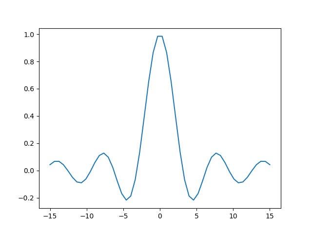

Org mode example
Table of Contents
1. Key strokes
- I use lower-case letter
afor theA-key. - I use upper-case letter
C-for theCtrlkey,M-for the Alt (meta) key andS-for theShiftkey.- hence
C-cisCtrl-C,C-c C-cis twice that andC-M-ameans simultaneously pressCtrl,AltandA. - note that you can type e.g.
C-c C-x C-lwithout releasing theCtrlkey (i.e., keepCtrlpressed while typingc x l).
- hence
ENTER,TABandESCare the keys you'd expect.- Got confused? Press
ESC ESC ESCand you should be good to start typing again. - See also http://pub.vandersluys.nl/download/GettingStartedWithEmacs.pdf (in particular section 1.2 and the start of 1.3)
2. TODO To do [1/3]
2.1. DONE What to use Org mode for [8/8]
[X]note taking, personal wiki, writing documentation[X]the brainstorm phase of a project, paper:- Overview in Org mode
- then export to LaTeX to finish
[X]clock tasks, projects[X]agenda, planning, task lists (TODO/PROGRESS/DONE), issues (OPEN/ASSIGNED/CLOSED), idea lists, …[X](internal) links[X]tables, simple spreadsheets[X]export, publish: plain text (ASCII, UTF-8), html, md, LaTeX/PDF (+Beamer!), odt, reST, …[X]equations, code
2.2. PROGRESS Add file with simple examples [5/6]
2.2.1. DONE Text style
- bold
- italics
- underlined
strike throughcodeorverbatim
2.2.2. DONE Task lists and headings [33%]
[X]see 2[X]indent:- put the cursor on an item (e.g. in this list) and press
Alt-arrow right/left - same for headers
- put the cursor on an item (e.g. in this list) and press
[ ]drag:- put the cursor on an item and press
Alt-arrow up/down - up/down swaps items (with the same indentation and if possible)
- the same for headers (of the same level)
- put the cursor on an item and press
[ ]change list symbols:- put the cursor on an item and press
Shift right/left - symbols change between
+/-/*/1./1)(*if possible)
- put the cursor on an item and press
[X](de)select item (radio button):- put the cursor on the item and press
C-c C-c - the number or percentage in the parent header (created by typing
[/]or[%]) changes as well
- put the cursor on the item and press
[ ]change TODO:- put the cursor on a header and press
Shift right/left - if all subheaders are DONE, the parent header changes from TODO to DONE as well
- put the cursor on a header and press
[ ]new item in a list:Alt-ENTER
[ ]new header in a document:Ctrl-ENTER
[ ]Create new list- Enumerated:
- type
1.or1)followed by a space and the description - press
Alt-ENTERfor the next item (counts automatically)
- type
- Bullets (unnumbered):
- type a
+,-or (if subitem)*followed by a space and the description - press
Alt-ENTERfor the next item with the same symbol
- type a
- Definition:
- Definition
- a definition is an unnumbered item with a keyword, followed by a double colon (
::) and the definition. - (no term)
Alt-ENTERasks for the next definition with the same symbol
- Check box/Radio button:
- type an item symbol or number, followed by a space,
[ ], another space and the description - the
[ ]lights up to show that the check box is active Alt-ENTERproduces a new item, but no empty check box (bug?)C-c C-con the line toggles between[ ]and[X]
- type an item symbol or number, followed by a space,
- Enumerated:
2.2.3. DONE Links
- Internal link: see 2
- External link: https://github.com/MarcvdSluys/
- External link with description: My GitHub page
2.2.4. DONE Table/spreadsheet
- type
|- TABfor a horizontal line - type
x|x^2|x^3 TABin the new line for the header - type
-right against the|for another line - in the left column, type
1 ENTER 2 ENTERetc. - under x2, type
=$1**2 TAB.$1represents column 1. - under x3, type
=$1**3 TAB - go to the line with
TBLFM(table formula) under the table and pressC-c C-c
| x | x2 | x3 |
|---|---|---|
| 1 | 1 | 1 |
| 2 | 4 | 8 |
| 3 | 9 | 27 |
| 4 | 16 | 64 |
| 5 | 25 | 125 |
2.3. PROGRESS More advanced examples
2.3.1. DONE Equations
LaTeX must be installed to display formatted equations in emacs.
- Lazy symbols outside equations using inline \LaTeX, like ∫, ∞ and ∇φ will show up nicely in \LaTeX.
- inline: type
$\int_0^\infty \frac{\sin x}{x} dx$and pressC-c C-x C-lto display in emacs. This is a nice equation \(\int_0^\infty \frac{\sin x}{x} dx\), but complicated. - between the lines: type
\[\int_0^\infty \frac{\sin x}{x} dx\]and pressC-c C-x C-lto display in emacs. \[\int_0^\infty \frac{\sin x}{x} dx\]
2.3.2. ACTIVE Code
- Elisp always works?
- Elisp (emacs lisp script)
- press
C-c C-, sfor a#+begin/end_src-block and addelispyourself - type some code and return a value (see example below)
- in the code block, press
C-c C-cand answer the question in the minibuffer below withyes ENTER - the result appears in a
RESULTSblock under the code, a bit like in a Jupyter notebook.
(concat (emacs-version) "\nOrgmode " (org-version))GNU Emacs 27.2 (build 1, x86_64-pc-linux-gnu, GTK+ Version 3.24.29, cairo version 1.16.0) of 2021-10-01 Orgmode N/A
- press
- Bash
Bash must be installed and Babel must be activated for Bash…
echo "My home directory is $HOME"
My home directory is /home/sluys
- Python
Python must be installed and Babel must be activated for Python…
- press
C-c C-, sfor a#+begin/end_src-block and typepythonyourself - type some code and return a value
- In the code block, press
C-c C-cand answer the question in the minibuffer below withyes ENTER - the return value appears below the code in a
RESULTSblock
x=3 y=5 z=x*y return z
15
import numpy as np import matplotlib.pyplot as plt x = np.linspace(-15,15) plt.plot(x, np.sin(x)/x) plt.savefig('Orgmode-example.png') return 'Orgmode-example.png' # Return filename to Org mode

- press
- Python + Bash
Print a list with a selection of files in the current directory in bash. I will export both (
both) the code and the result (to e.g..mdor.pdf). Also, I will give the code a name (ls) so that the output can be used later:ls -lb Orgmode-example.*
-rw-r--r-- 1 sluys sluys 9465 Dec 16 20:49 Orgmode-example.md -rw-r--r-- 1 sluys sluys 37446 Dec 16 20:50 Orgmode-example.odt -rw-r--r-- 1 sluys sluys 7945 Dec 16 20:50 Orgmode-example.org -rw-r--r-- 1 sluys sluys 321341 Dec 16 20:49 Orgmode-example.pdf -rw-r--r-- 1 sluys sluys 23293 Dec 16 20:51 Orgmode-example.png -rw-r--r-- 1 sluys sluys 10015 Dec 16 20:50 Orgmode-example.rst -rw-r--r-- 1 sluys sluys 12381 Dec 16 20:49 Orgmode-example.tex -rw-r--r-- 1 sluys sluys 9330 Dec 16 20:51 Orgmode-example.txt
Use
awkto take the file names and sizes fromlsand create a table:BEGIN { OFS="|" }; { print $5, $9}
9465 Orgmodeexample.md 37446 Orgmodeexample.odt 7945 Orgmodeexample.org 321341 Orgmodeexample.pdf 23293 Orgmodeexample.png 10015 Orgmodeexample.rst 12381 Orgmodeexample.tex 9330 Orgmodeexample.txt Use Python to o.a. find the smallest and largest file in the table from
awk:print(table[0]) # First row of the table as read print("Number of files: %i" % len(table)) print("Smallest file: (%i b) %s" % tuple(min(table))) print("Largest file: (%i b) %s" % tuple(max(table))) print("Total size: %0.3f kb" % (sum([x for x,y in table]) / 1000))
[9465, 'Orgmode-example.md'] Number of files: 8 Smallest file: (7945 b) Orgmode-example.org Largest file: (321341 b) Orgmode-example.pdf Total size: 431.216 kb